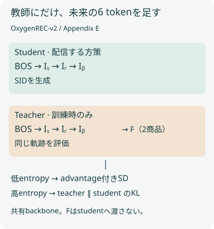

概要
JD.comのOxygenREC-v2は、click・cart・orderの指示でSID生成を条件付ける。学習時には実ログとの一致と、未来行動を見た同一backboneの教師を使う。IDGRの焦点は行動信号を入れる位置にある。6つの配信面のA/Bを読み分け、外部報酬モデルの除去をサービス全体のカスケード撤去へ広げない。
問題設定
クリックされやすい商品と購入されやすい商品は一致しない。生成後にrankerで点を付けても、beamから消えた商品は戻らない。一方、生成損失と識別headの損失を共有backboneで最適化すると、その重みの調整が必要になる。原論文はこの2つの経路と、生成の入口に行動を置く経路を比較する（Figure 1、Appendix C）。
核心
著者の主張 · 論文に書かれていること
著者はIDGR（Internalizing Discrimination into Generative Recommendation）として、入力の行動指示と行動重み付き学習を提案する。追加学習のEA-TOSDは、検証可能な軌跡報酬と、教師のentropyに応じた2種類の自己蒸留を組み合わせる。単一backboneを保ち、外部の行動scorerを不要にするという主張である（§4）。
解釈・批評 · 読書メモ
候補を生成する前に目的を渡す設計と、生成済み候補の採点を分けて読むと違いが明確になる。ただし条件付き生成もログにない選好を保証しない。未来prefixは訓練だけに置く必要があり、外部報酬モデルがなくても、ログの偏りや損失重みの選択は残る。
未来情報の境界
{kind=link}

行動をいつ使うかで、変えられる対象が違う
| 条件 | 方式 | 行動信号の入口 | 作用 |
|---|---|---|---|
| 外部RM | OneRec / OneMall型 | 生成後に別rankerが報酬 | 方策の追加学習 |
| 生成・識別の共同学習 | GDM / Suffix Head | 出力headへ行動loss | 共有表現と候補内の順位 |
| IDGR | OxygenREC-v2 | prefix Iᵦ＋ログ一致＋EA-TOSD | 最初のtokenから条件付け |
列が収まらない場合は、表を横にスクロールできます。
モデル / 手法
3段のSIDを出すencoder–decoderに、行動のprefixを足す
商品を残差量子化した3つのtokenで表す。各codebookは8192、ユーザーの短期履歴・長期履歴・profileをencoderへ渡す。decoderはscene指示Iₛ、近傍時間でLLMが作るreasoning埋め込みIᵣ、行動指示Iᵦを読む。オンライン構成は3Bパラメータ中1Bが活性化するMoEである。§3、Appendix G
Iᵦは自然言語の自由入力ではない。click・cart・orderに予約tokenを割り当て、共通embedding tableから読み、2層の射影ψを通す。Appendix B.2ではLeakyReLU（負側0.01）とdropoutを使う。prefixは[BOS, Iₛ, Iᵣ, Iᵦ]。学習時は実ログの行動、配信時は面の目的を指定する。
露出だけのtargetを除き、行動と教師信号をそろえる
重複行動の優先順位はorder > cart > click > exposure。各targetを展開し、露出だけの例を落とす。既定の重みはclick=1.2、cart=1.5、order=2.0である。listwiseではN個の商品をL=3N tokenへ展開する。式6の幾何重みは平坦化したt全体に掛かる表記であり、このLabでも商品ごとに重みをリセットしない。
同じモデルでも、教師だけが未来を読む
教師は同じbackboneへFを追加する。Fはtⱼ>t₀を満たす未来targetから最大2商品、各3 tokenを採り、固定6 tokenへpaddingする。studentにはFを渡さない。教師側の予測位置は6 token分のoffsetを合わせる。Appendix Eの表10はexposureをdefaultと記すが、表3で良いのはexposure-onlyを除いたClick版である。default表記と最良結果を同一視しない。
疎な一致報酬で最良軌跡を選び、その軌跡上で教師を評価する。teacherのentropy Hᵀ<0.75ならSD、Hᵀ>2.6ならforward KL。中間帯と閾値に等しい点には、該当する蒸留を掛けない。高entropyを単に捨てる設計ではない。式5–13、Algorithm 1
指示のprobeは「注文だけ指定すれば万能」を否定する
下表は同じ評価文脈に異なるIᵦを強制した結果。orderを強制するとorder部分集合を保つ一方、click部分集合のHR@512は42.99から34.54へ下がる。目的を変えた結果なので、全ユーザーへorder指示を固定する根拠にはならない。Figure 4のLDAは行動ラベルを使った射影であり、教師なしで自然に分離した証拠とは区別する。
最良軌跡の報酬と、2つの蒸留経路
- 条件付き生成・式3pθ(Y | X, Iₛ, Iᵣ, Iᵦ), Iᵦ = ψ(Emb(b))
Iᵦが全生成位置の入力になる。
- 幾何報酬・式5–7ωₜ = γᵗ⁻¹ / Σⱼ₌₁ᴸ γʲ⁻¹; Rᵢ = Σₜ₌₁ᴸ ωₜ 𝟙[ŷᵢ,ₜ = y*ₜ]; k = argmaxᵢ Rᵢ; LVR = E[−Rₖ Σₜ log πS(ŷₖ,ₜ | X, ŷₖ,<ₜ)]
一致はtoken単位。選択軌跡の全tokenをRₖで重み付けする。
- 教師の確信度・式8–10Aₜ = log πT(ŷₜ | X,F,ŷ<ₜ) − log πS(ŷₜ | X,ŷ<ₜ); Hᵀₜ = −Σᵥ πT(v | X,F,ŷ<ₜ) log πT(v | X,F,ŷ<ₜ)
gˡₜ=𝟙[Hᵀₜ<τₗ]、gʰₜ=𝟙[Hᵀₜ>τₕ]。各gをΣⱼgⱼ+εで割った値がg̃。
- 低entropy・式11LSD = E[−Σₜ g̃ˡₜ sg(Aₜ) log πS(ŷₜ | X,ŷ<ₜ)]
advantage側へ勾配を戻さない。負のadvantageもあり得る。
- 高entropy・式12LFKL = E[Σₜ g̃ʰₜ DKL(πT(· | X,F,ŷ<ₜ) ∥ πS(· | X,ŷ<ₜ))]
向きはteacherからstudent。複数の妥当な候補の質量を伝える。
- 結合・式13とAlgorithm 1LEA-TOSD = λ LVR + β LSD + ζ LFKL
既定λ=.1、β=ζ=.01。Algorithm 1ではさらにλsft LSFTを加える。
固定文脈へ別の行動を強制する
| 条件 | click部分集合 | cart部分集合 | order部分集合 |
|---|---|---|---|
| Actual | 42.99 | 48.29 | 53.02 |
| Force click | 42.99 | 46.65 | 48.33 |
| Force cart | 40.20 | 48.29 | 50.02 |
| Force order | 34.54 | 44.85 | 53.01 |
列が収まらない場合は、表を横にスクロールできます。
なぜ効きそうか
解釈・推論
行動指示は最初のSID tokenから参照されるため、粗い商品カテゴリを選ぶ段階で目的を変えられる。未来を見た教師は疎な完全一致報酬を補う。低entropy位置では特定tokenの方向を、高entropy位置では複数候補への確率を伝える。ただしentropyは正しさの証明ではない。自信のある誤りや、未来ログ自体の偏りまで自動で除去する機構ではない。
根拠
全指標でProxy-RMに勝ったわけではない
Table 1のHR@1はv1 PT-only 4.62%、Proxy-RM 5.54%、v2 5.64%。HR@512は43.24%、43.09%、44.14%である。v1からのHR@1差は1.02ポイントで、相対1.02%ではない。v2は7指標中6指標でProxy-RMを上回るが、HR@128は33.76%対33.89%で下回る。
追加学習のどこが効いたか
Table 4ではFKL除去でHR@512が44.14%から43.80%へ落ちる。一方、VRだけでもHR@1は5.64%で完全構成と同じ。すべての項がすべての指標を改善したとは読めない。Table 5では低・高entropy各20%の選択が各100%より良いが、20%はこの条件の実測結果であり普遍的な最適値ではない。
6面のA/Bは母集団と更新内容を分ける
配信面ごとに5–20%のtraffic、5–8日間。表の比較対象は当時の本番モデルで、要旨ではOxygenREC-v1比と要約される。feed・floorの事前学習更新と、RecForUでの追加学習更新は同じ介入ではない。下表の星印はp<0.05、無印は有意差未確認。特に−2.34%のGMVを「退化なし」と証明したとは扱わない。本文では丸めた−2.3%、p=0.23と説明される。
要旨のGMV +2.8–6.8%は表6の全範囲ではない。ホーム面の+21.21%や負の面も残す。一次資料：Tables 1–6、§5–6。
6面のA/B：有意差と負の値も残す
| 条件 | UCTR | UCTCVR | GMV |
|---|---|---|---|
| 1 Budget & Free Shipping / homepage | +0.09% | +3.62%* | +21.21%* |
| 2 Billion Subsidy / feed | +0.08% | +1.61%* | +2.80% |
| 3 Budget & Free Shipping / feed | +1.39%* | +4.44%* | +6.86% |
| 4 Seckill / feed | +0.01% | +2.90%* | +1.09% |
| 5 Add-to-Cart Overlay | −0.34% | +2.15%* | −2.34% |
| 6 RecForU | −0.03% | +0.56% | +4.25%* |
列が収まらない場合は、表を横にスクロールできます。
実行可能な理解
uv run papers/oxygenrec-v2-idgr/run.py
同一文脈の3つの候補群を仮定し、行動別に600件ずつ合成ログを抽出する。平滑化した条件付き頻度と、行動を無視してpoolした頻度を比較する。別の16語彙・3位置の計算では8本の軌跡をstudentから抽出し、幾何重みの報酬で1本を選ぶ。教師分布は人工的に与え、低・中・高entropyの経路と損失を計算する。
このLabは run.py 単体で実行できます。結果はコードと同じフォルダーに保存されます。
合成実験 · Mechanism PARTIAL
指示だけを変えて候補の確率を見る
3種類の人工ログから学んだ頻度表。表8の再現値ではなく、行動を入力に持つ場合と持たない場合の違いを調べる。
行動指示（0=click / 1=cart / 2=order）：0
- 合成候補群 1：70.315091
- 合成候補群 2：19.237148
- 合成候補群 3：10.447761
指示=click。同じ文脈で学習済み頻度表の条件だけを変更。業務上の行動確率やHRではない。
数値の出所：このLabの results.json。論文の測定値ではありません。
結果
合成ログの条件付き頻度と式6・8–13の算術検証。MoE、自己蒸留の学習、JD.comの成果は再現していない。
選択軌跡に対する損失の計算
- seed: 15
| 指標 | value |
|---|---|
| VR | 4.07360421 |
| SD | 2.21004531 |
| FKL | 0.08520686 |
| weighted_without_SFT | 0.43031294 |
生の results.json
{
"seed": 15,
"note": "合成ログの条件付き頻度と式6・8–13の算術検証。MoE、自己蒸留の学習、JD.comの成果は再現していない。",
"verification": {
"mechanism": "PARTIAL",
"performance": "NOT TESTED",
"scaling": "NOT TESTED",
"production_applicability": "NOT TESTED"
},
"checks": {
"finite_loss_and_routing": "CONFIRMED",
"full_EA_TOSD_training": "NOT TESTED"
},
"experiments": [
{
"name": "選択軌跡に対する損失の計算",
"seed": 15,
"metrics": {
"VR": 4.07360421,
"SD": 2.21004531,
"FKL": 0.08520686,
"weighted_without_SFT": 0.43031294
}
}
],
"candidate_trajectories": [
[
15,
0,
10
],
[
0,
15,
0
],
[
13,
9,
13
],
[
15,
1,
3
],
[
10,
2,
2
],
[
1,
13,
13
],
[
12,
1,
14
],
[
6,
1,
5
]
],
"selected": [
0,
15,
0
],
"loss_terms": {
"VR": 4.073604210256413,
"SD": 2.21004531032739,
"FKL": 0.08520685850459747,
"weighted_without_SFT": 0.4303129427139612,
"routes": [
{
"entropy": 0.7404363144605619,
"low": 1,
"high": 0
},
{
"entropy": 2.297841787670582,
"low": 0,
"high": 0
},
{
"entropy": 2.772588722239781,
"low": 0,
"high": 1
}
]
},
"instruction_probabilities": [
[
0.703150912106136,
0.19237147595356552,
0.1044776119402985
],
[
0.16583747927031509,
0.6600331674958541,
0.17412935323383086
],
[
0.07960199004975124,
0.1890547263681592,
0.7313432835820896
]
],
"unconditioned": [
[
0.3161967938087341,
0.34715312327252623,
0.33665008291873966
],
[
0.3161967938087341,
0.34715312327252623,
0.33665008291873966
],
[
0.3161967938087341,
0.34715312327252623,
0.33665008291873966
]
],
"explorer": {
"label": "行動指示（0=click / 1=cart / 2=order）",
"unit": "",
"metric": "合成候補群の確率（%）",
"default": 0,
"frames": [
{
"value": 0,
"lines": [],
"bars": [
{
"label": "合成候補群 1",
"value": 70.315091
},
{
"label": "合成候補群 2",
"value": 19.237148
},
{
"label": "合成候補群 3",
"value": 10.447761
}
],
"note": "指示=click。同じ文脈で学習済み頻度表の条件だけを変更。業務上の行動確率やHRではない。"
},
{
"value": 1,
"lines": [],
"bars": [
{
"label": "合成候補群 1",
"value": 16.583748
},
{
"label": "合成候補群 2",
"value": 66.003317
},
{
"label": "合成候補群 3",
"value": 17.412935
}
],
"note": "指示=cart。同じ文脈で学習済み頻度表の条件だけを変更。業務上の行動確率やHRではない。"
},
{
"value": 2,
"lines": [],
"bars": [
{
"label": "合成候補群 1",
"value": 7.960199
},
{
"label": "合成候補群 2",
"value": 18.905473
},
{
"label": "合成候補群 3",
"value": 73.134328
}
],
"note": "指示=order。同じ文脈で学習済み頻度表の条件だけを変更。業務上の行動確率やHRではない。"
}
]
}
}指示を変えると条件付き頻度が変わり、poolした対照では変わらない。これはデータ生成時に仮定した行動差を学習できるという確認である。教師の低・高entropyの間には蒸留しない帯域がある。表示するVR・SD・FKLは選択軌跡に対する値で、モデル改善量ではない。
検証できたこと
CONFIRMED：固定seedでの再計算、報酬の正規化、entropy閾値の厳密な不等号、選択token数での損失正規化。MechanismはPARTIAL：式の有限例を確認した範囲に限る。行動指示を学ぶTransformerや、同一backboneから作る教師は実装していない。
検証していないこと
Performance / Scaling / Production applicabilityはNOT TESTED。JD.comログ、3B-A1B MoE、近未来prefixの実データ生成、EA-TOSDの勾配学習、オンライン売上は未検証。公式実装へのリンクは確認した原論文・書誌に見当たらない。§5はofflineを3Bと記す一方、Appendix G.2は0.7Bとする。この食い違いは解消できず、offline規模を断定しない。
実装
instruction_probe() はLaplace平滑化した頻度学習、reward() は式6、gates() は式9–10の判定、losses() は式11–13の数値を返す。教師は固定配列なので自己蒸留そのものの再現ではない。JSONのweighted_without_SFTにはSFT anchorを含めない。原論文Algorithm 1はSFTを並行して加えるため、総学習損失と混同しない。
原論文・公式コード対応
| 原論文の場所 | Labの対応 | 実装の範囲 |
|---|---|---|
| Figure 1、Appendix C | 3方式の比較 | 推論入力と出力採点の境界を図示 |
| 式3–4、Appendix B | 行動指示probe | instruction_probe() は頻度モデルのみ |
| 式5–7 | 軌跡選択 | reward()、8本の人工rollout |
| 式8–13、Algorithm 1 | entropy routingと損失 | gates()、losses()。SFT・勾配学習なし |
| Table 6 | 面別A/B | 著者報告値。独立再現なし |
| Table 8 | 強制指示の表 | 原論文値。toyと別表示 |
全文v1を本文からAppendix Hまで確認した。公式コードは原論文・arXiv書誌で未確認。run.pyはこのLab独自の教材で、公式実装ではない。
出典上の留保：§5のoffline 3BとG.2の0.7B、Table 10のdefaultとTable 3の最良教師は区別した。Table 6をabstractのGMV範囲で置き換えない。v1からのシステム更新であり、サービス全体のカスケード撤去を確認した資料としては使わない。